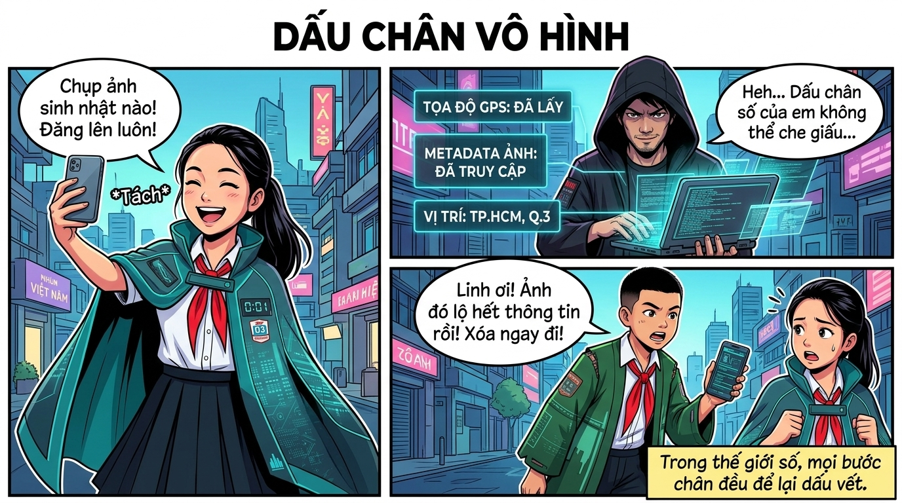
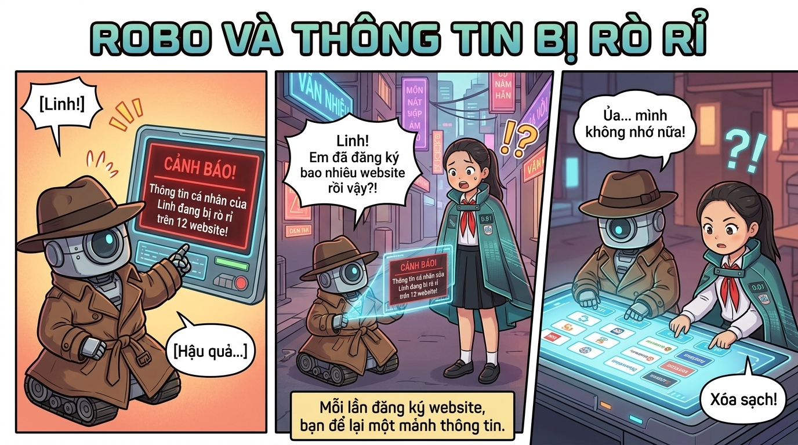
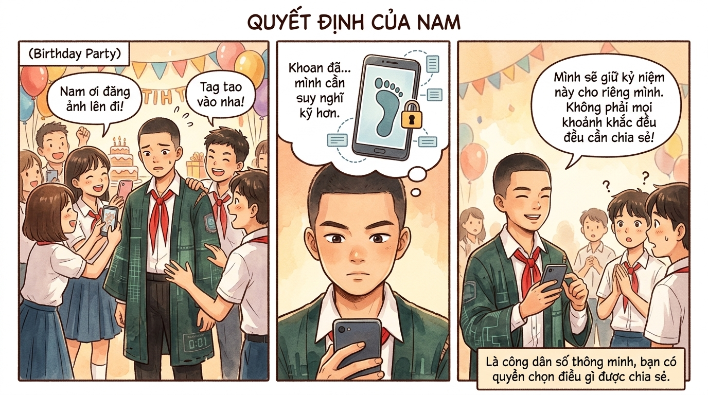

Tìm hiểu về quyền lợi, trách nhiệm và kỹ năng cần có để sống tốt trong thế giới kỹ thuật số hiện đại.
🌐
Digital Citizen
Người sử dụng công nghệ một cách có trách nhiệm, an toàn và tôn trọng trong thế giới kỹ thuật số.
Công dân thế kỷ 21
Công Dân Số Là Gì?
Công dân số là người biết sử dụng internet và công nghệ một cách thông minh, có trách nhiệm và đạo đức. Giống như ngoài đời thực, trên mạng bạn cũng cần tuân theo luật lệ và tôn trọng mọi người.
🔐Bảo vệ thông tin cá nhân: tên, địa chỉ, ảnh, số điện thoại của mình và gia đình.
💬Giao tiếp lịch sự, tôn trọng — dù đang ở đây hay ở đó.
🔎Kiểm tra thông tin trước khi tin và chia sẻ — không lan truyền tin giả.
⏰Cân bằng thời gian online — không để mạng xã hội chiếm hết cuộc sống.
🤝Giúp đỡ người khác, lên tiếng khi thấy ai đó bị đối xử sai trên mạng.
💡
Bạn có biết?
Tại Việt Nam, Luật An ninh mạng 2018 quy định rõ quyền và nghĩa vụ của mọi người khi hoạt động trên không gian mạng. Vi phạm có thể bị xử phạt hành chính hoặc hình sự!
📺
Video Bài Học: Công Dân Số
Tìm hiểu về trách nhiệm, an toàn và văn hóa ứng xử trên không gian số
▶️ Đoạn trích 01:37
4 Trụ Cột Của Công Dân Số
🔒
1
An Toàn Thông Tin
Biết bảo vệ tài khoản bằng mật khẩu mạnh, bật xác thực 2 lớp (2FA), không chia sẻ thông tin nhạy cảm với người lạ.
🤝
2
Đạo Đức Số
Tôn trọng bản quyền, không sao chép công trình người khác; đối xử với người khác trên mạng như ngoài đời.
🔎
3
Tư Duy Phản Biện
Luôn đặt câu hỏi về nguồn gốc thông tin. Phân biệt tin thật — tin giả (fake news), không chia sẻ khi chưa kiểm tra.
⚖️
4
Quyền & Trách Nhiệm
Hiểu quyền riêng tư của mình và người khác. Biết báo cáo nội dung vi phạm thay vì chia sẻ hoặc im lặng.
💡
5
Kỹ Năng Kỹ Thuật Số
Biết dùng công nghệ cho mục đích tốt: học tập, sáng tạo, kết nối — không chỉ giải trí và lướt mạng xã hội.
🌍
6
Tham Gia Có Trách Nhiệm
Đóng góp tích cực cho cộng đồng mạng: chia sẻ nội dung có giá trị, hỗ trợ người cần giúp đỡ, phản đối điều tiêu cực.
👣
Digital Footprint
Mọi hành động của bạn trên mạng đều để lại dấu vết — giống như dấu chân trên cát, nhưng dấu chân số tồn tại mãi mãi!
Nghĩ trước — Đăng sau!
Dấu Chân Số Là Gì?
Dấu chân số là tất cả thông tin về bạn được lưu lại trên internet: bài đăng, bình luận, ảnh, video, lịch sử tìm kiếm, thậm chí cả những tin nhắn bạn nghĩ đã xóa!
📸
Ảnh & Video
Ảnh bạn đăng có thể bị lưu lại và chia sẻ bởi người khác, kể cả sau khi bạn xóa.
💬
Bình luận & Bài đăng
Những gì bạn viết trên mạng có thể được tìm thấy qua Google nhiều năm sau.
🔍
Lịch sử tìm kiếm
Google, Bing lưu lại mọi thứ bạn tìm kiếm. Đây có thể bị dùng để quảng cáo hoặc phân tích.
📍
Vị trí & Check-in
Check-in địa điểm hoặc chia sẻ ảnh có dữ liệu GPS tiết lộ nơi bạn sống, học, chơi.
📷 Học sinh THCS thực hành bảo mật thực tế
🔐 Xác thực 2 yếu tố (2FA) — Lớp bảo vệ thứ hai
Khi bật 2FA, dù hacker có biết mật khẩu của bạn, họ vẫn không thể vào tài khoản nếu không có mã OTP trên điện thoại!
⚡
Quy tắc: Nghĩ Trước — Đăng Sau!
Trước khi đăng bất kỳ thứ gì, hãy tự hỏi: "Tôi có muốn thầy/cô, bố mẹ hoặc nhà tuyển dụng tương lai thấy điều này không?". Nếu không — đừng đăng!
📖 Thư Viện Truyện — Công Dân Số
3 câu chuyện với số nhân vật khác nhau — Linh · Nam · ROBO · Hacker Mũ Đen

🛡️ LINH
Chiến binh Số nhanh nhạy
🔍 NAM
Nhà phân tích tài năng
⚠️ HACKER MŨ ĐEN
Kẻ ẩn danh nguy hiểm
// Cảnh 1 — Buổi sinh nhật vui vẻ
LINH
Cuối tuần, Linh được mời dự sinh nhật bạn thân tại nhà hàng sang trọng trong Thành Phố Số. Cô bé chụp thật nhiều ảnh và háo hức chia sẻ lên mạng xã hội...
Linh: "Sinh nhật vui quá! Đăng ảnh lên cho cả lớp xem ngay thôi! 📸🎂"
Linh đăng ảnh với caption: "Sinh nhật bạn Hoa tại Nhà hàng Sao Đêm, Q.3! 🎉" — bật check-in địa điểm, gắn hashtag rộn ràng, mà quên mất ảnh vẫn đang bật GPS...
// Cảnh 2 — Bóng tối đang theo dõi
HACKER MŨ ĐEN
Cùng lúc đó, ở một góc tối của Thành Phố Số, Hacker Mũ Đen đang theo dõi mạng xã hội bằng những công cụ bí ẩn...
Hacker Mũ Đen: "Haha... ảnh của cô bé này chứa dữ liệu GPS. Nhà hàng Sao Đêm, Quận 3... và trong ảnh còn thấy rõ biển số xe của gia đình. Thú vị đấy... 😈"
Chỉ từ một bài đăng, Hacker Mũ Đen đã biết: vị trí Linh thường lui tới, tên trường từ đồng phục, thói quen cuối tuần và nhận ra cả bố mẹ Linh!
// Cảnh 3 — Nam cảnh báo kịp thời
NAM
Nam: "Linh ơi! Bài đăng vừa rồi tiết lộ rất nhiều thứ nguy hiểm đó. Xóa đi ngay! 🚨"
Linh: "Sao vậy Nam? Đó chỉ là ảnh sinh nhật bình thường mà?"
Nam: "Ảnh GPS, check-in địa điểm, biển số xe, đồng phục trường — tất cả tạo ra Dấu Chân Số! Kẻ xấu có thể dùng để theo dõi bạn và gia đình đấy!"
// Cảnh 4 — Linh trở thành Chiến Binh Số thực thụ
LINH
Linh (hoảng hốt): "Ôi không! Mình xóa ngay! Nhưng sau này phải làm gì để tránh, Nam?"
Nam: "Tắt GPS khi chụp ảnh chia sẻ. Không check-in địa chỉ nhà hay trường. Đặt tài khoản ở chế độ Riêng Tư. Và luôn tự hỏi: 'Nếu người lạ nhìn bài này, họ biết được gì?'"
Linh xóa bài, chỉnh cài đặt riêng tư ngay. Hacker Mũ Đen mất dấu vết. Thành Phố Số an toàn hơn! ✨🛡️
💡 Bài học: Dấu Chân Số tồn tại mãi mãi!
Mỗi ảnh, bài đăng, check-in đều để lại dấu chân số tồn tại lâu dài trên internet
Ảnh có thể chứa metadata GPS — hãy tắt vị trí trước khi chụp ảnh chia sẻ
Đặt tài khoản mạng xã hội ở chế độ riêng tư, chỉ bạn bè mới xem được
Hỏi "Người lạ biết được gì từ bài này?" trước khi đăng bất cứ điều gì
Thông tin bị lộ không chỉ ảnh hưởng đến bạn mà còn ảnh hưởng đến cả gia đình!

🤖 ROBO
Robot thám tử thông minh
🛡️ LINH
Chiến binh Số nhanh nhạy
// Cảnh 1 — ROBO phát hiện cảnh báo bất thường
ROBO
Một buổi sáng, ROBO — robot thám tử đang tuần tra dữ liệu mạng — phát hiện tín hiệu bất thường...
ROBO (hú còi báo động): "CẢNH BÁO! Tên, ngày sinh, số điện thoại và trường học của Linh đang xuất hiện trên 12 website khác nhau! 🚨"
ROBO lập tức lăn bánh đến tìm Linh, mang theo hồ sơ điều tra chi tiết...
// Cảnh 2 — Linh choáng váng trước sự thật
LINH
ROBO: "Linh! Em đã đăng ký bao nhiêu website và ứng dụng rồi vậy?! ROBO đếm được 12 nơi có thông tin của em!"
Linh (mắt tròn xoe): "Ủa... mình không nhớ nữa! Có những cái đăng ký từ lớp 6 để chơi game, cái khác để xem phim, cái khác để tải ảnh... Trời ơi!"
ROBO hiện ra hologram danh sách — 12 dịch vụ đã lưu thông tin cá nhân của Linh!
// Cảnh 3 — Hai nhân vật điều tra cùng nhau
ROBO
ROBO: "Đừng lo! ROBO sẽ giúp Linh dọn sạch. Đầu tiên: xem mỗi website đó có thật sự cần thông tin của em không?"
Hai nhân vật ngồi bên nhau, đi qua từng website. 7 cái không cần thiết → xóa tài khoản. 3 cái quan trọng → đổi mật khẩu mạnh hơn. 2 cái không xóa được → báo cáo phụ huynh.
Linh: "ROBO ơi, tại sao mình lại đăng ký nhiều vậy mà không để ý nhỉ?"
// Cảnh 4 — Bài học từ ROBO
ROBO
ROBO: "Vì mỗi lần đăng ký, người ta hỏi thông tin và em điền vào mà không đọc kỹ điều khoản! Từ nay trước khi đăng ký bất cứ đâu, hãy hỏi: Mình có thật sự cần service này không?"
Linh: "Và đọc kỹ xem họ dùng thông tin của mình để làm gì nữa!"
ROBO gật đầu hài lòng. Từ đó, Linh kiểm tra lại danh sách ứng dụng và website mỗi tháng một lần. 🔒✨
💡 Bài học: Kiểm soát dữ liệu cá nhân của bạn!
Mỗi lần đăng ký website/app là bạn để lại thông tin — chỉ đăng ký khi thật sự cần
Đọc kỹ điều khoản trước khi đăng ký — website sẽ dùng dữ liệu của bạn thế nào?
Xóa tài khoản những dịch vụ không còn dùng để thu hồi dữ liệu cá nhân
Dùng địa chỉ email phụ để đăng ký các dịch vụ không quan trọng
Mỗi tháng kiểm tra lại danh sách ứng dụng đã đăng ký một lần

🔍 NAM
Câu chuyện độc lập — chỉ một mình Nam
// Cảnh 1 — Bữa tiệc và áp lực từ bạn bè
NAM
Thứ Bảy, Nam được mời dự tiệc sinh nhật lớn tại nhà bạn. Cả lớp ồn ào chụp hình, selfie và đua nhau đăng lên TikTok, Instagram...
Bạn bè: "Nam ơi đăng ảnh lên đi! Tag tao vào nha!" "Không đăng là không có kỷ niệm à?" "Story đi bro!"
Nam cầm điện thoại lên, ngón tay chạm nút chia sẻ, nhưng dừng lại...
// Cảnh 2 — Nam suy nghĩ nghiêm túc
NAM
Nam nhìn vào ảnh: có địa chỉ nhà chủ nhà, có mặt nhiều bạn chưa xin phép đăng ảnh, có thể nhìn thấy xe của bố mẹ...
Nam (trong đầu): "Khoan đã. Mình đã được hỏi ý kiến trước chưa? Các bạn trong ảnh có muốn xuất hiện trên mạng không? Địa chỉ nhà này có cần chia sẻ công khai không?"
Những câu hỏi đó dồn dập trong đầu Nam — bài học về dấu chân số và quyền riêng tư của người khác hiện lên rõ ràng...
// Cảnh 3 — Quyết định dũng cảm
NAM
Nam: "Tao sẽ không đăng. Không phải vì không vui, mà vì trong ảnh có nhà của Mai và có mặt nhiều bạn chưa được hỏi ý kiến."
Bạn bè (ngạc nhiên): "Ủa... mày nói đúng ha. Tao cũng chưa hỏi ý kiến Mai là chủ nhà..." "Mình cũng chưa xin phép các bạn kia..."
Một giây im lặng... rồi cả nhóm đồng ý: hỏi từng người trước khi đăng. Một số bạn không muốn xuất hiện trên mạng — và điều đó hoàn toàn được tôn trọng.
// Cảnh 4 — Kỷ niệm thật sự không cần màn hình
NAM
Nam (mỉm cười): "Mình sẽ giữ kỷ niệm này cho riêng mình. Không phải mọi khoảnh khắc đẹp đều cần chia sẻ với thế giới — đôi khi giữ cho chính mình mới là trân trọng nhất."
Nam cất điện thoại vào túi và tham gia trò chơi cùng bạn bè. Bữa tiệc vui hơn khi không ai lo chờ likes! 🎉
Hôm đó, Nam đã hành động như một Công Dân Số thực thụ — không phải vì bị bắt buộc, mà vì anh hiểu giá trị của quyền riêng tư. ✨
💡 Bài học: Quyền riêng tư — của bạn VÀ của người khác!
Luôn hỏi ý kiến mọi người trong ảnh trước khi đăng — họ có quyền không muốn xuất hiện trên mạng
Không phải mọi khoảnh khắc đều cần chia sẻ — giữ cho riêng mình cũng rất đẹp!
Địa chỉ, xe cộ, chi tiết cá nhân của người khác cũng thuộc về quyền riêng tư của họ
Là Công Dân Số có trách nhiệm: bảo vệ quyền riêng tư của chính mình VÀ của bạn bè
Lần sau trước khi đăng ảnh nhóm: hỏi từng người, không giả định ai đó đồng ý